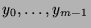
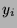
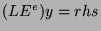
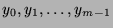

Usage
values(L)([ ])
values(L, e)([ ])
values(L, e)([ ], rhs)
Signatures
values: RXE Vector F
values: (RXE, Integer) values: (RXE, Integer)
| Parameter | Type | Description |
|---|---|---|
| L | % | A linear recurrence |
| e | Integer | An optional shift (default is 0) |
|  | F | Initial conditions |
| rhs | Generator F | An optional right-hand side (default is 0) |
Returns
Returns a generator for the sequencesatisfying by , starting with . If
is nonsingular, i.e.if the leading coefficient of
Remarks
This function causes a division by zero if a singularity of